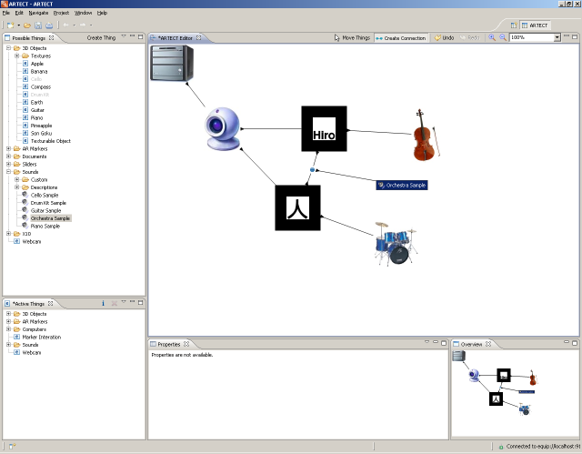

It can be useful to specify interactions involving 2 markers. ARTECT can recognize when two markers are close to each other and by making a link between them, you can specify what should happen, including playing a sound, displaying a document or turning on the power (through an X10 unit).
For example, to play the sound of an orchestra when the cello and drum kit markers are borough together (as shown above), add a connection between these two markers. The result is a new icon - an interaction point, which can then be connected to a sound sample as shown below: 
Note that here the cello and drum kit sound samples that were previously connected to their respective 3D models have been deleted. This is to enable easier testing of the effect of bringing two markers close together (if they remain in the graph, 3 sound samples will be played at the same time when the markers are seen together by the webcam).